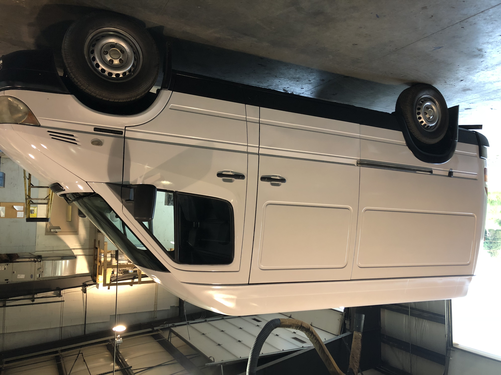

3/22/19: Van Choice
If any of you are familiar with the “Van life movement” the type of vans that people live in range widely and deciding what type of vehicle would fit me best was my first big decision in the build process. Did I want and old-school retro look or a newer adventure van look? Did I need to be able to stand up in the van or would a low roof be sufficient? Was all wheel drive a necessity? Did I want a longer van with more room for activities or a smaller van that would be easier to drive and park? How many miles was I comfortable with? And most of all how much was I willing to spend? All of these questions definitely came into play when making the decision.
After quite the back and forth arguments in my head I realized that I was really never going to find a Van with everything I wanted for the price point I was willing to spend. If I really enjoyed living in a Van they maybe when I had more money, I would be able to purchase my dream vehicle. The process of actually finding a van turned out to be a bit more of a headache than I imagined as well. Finding a car from a dealer just ended up being so out of my price range, so craigslist it was. I was living out of Reno, NV at the time so I spend what felt like forever browsing craigslist’s around Nevada, Northern CA, and Oregon. Turns out a lot of people on the west coast want to live in vans and buy these suckers up quick and for outrageous prices. I actually thought I found the holy grail of vans in the LA area and thought my prayers had been answered. The “too good to be true” van turned out to be a giant wire transfer scam unsurprisingly. Tight. Luckily, they were pretty unconvincing and I figured it out pretty easily.
I ended up purchasing a 2WD 2003 Freightliner Sprinter Highroof from a guy in Youngstown OH area. The Freightliner sprinter are actually identical to the Dodge and Mercedes model sprinters for these years and are equipped with a Mercedes 2.7L Turbo diesel Engine. I purchased my van for 5 grand and it had a whopping 250,000 miles on it. Now I know that will scare your average car owner but in all reality a diesel engine can run to 500,000 miles if you treat it well (The other parts in the van may be a different story though).

Now after living in the van for over 2 months how do I feel about my van choice? Overall, I am very pleased with my decision. The ability to be able to stand up in the van has been such a nice feature and I honestly don’t think I would be enjoying my time living in a Van as much if I didn’t have it. Just being able to comfortably cook dinner or change clothes is huge. I legitimately forget that I am in a Van sometimes, and that is something I don’t think would be the case with a low ceiling vehicle. I’m very pleased with the length of van that I purchased too. I don’t find it too difficult to maneuver around compared to a normal car or truck, and for one person I really think it’s the perfect living size. I believe that I could accompany a guest for a short period of time in the van but anything long term with two people I feel would be very difficult and a longer van would most likely be needed. As for the look of my van? If you think you’re clever making a “free candy” joke, I’ve heard it about 1000 times. GOOD ONE! But in all reality, I don’t mind the look of it. Sure it would be cool if it was a different color or had a cool design on it (or I don’t know, maybe some windows) but the price point of those things just weren’t enough for me to justify. I do deeply wish I had 4 wheel drive sadly. Putting on chains and not being able to get out on any sketchy dirt roads is a bummer but its something I have to live with. Maybe my next van. The last small regret I have is purchasing my van in Ohio. Damn you Ohio and the amount of salt you put on the roads. The rust on my van is causing some complications on what could be simple fixes to mechanical issues which is turning out to be a bit annoying, but just something I have to deal with.
There are so many different types of vans that people choose to live in and everyone will tell you that theirs is the correct choice, but honestly it just comes down to what your wants and needs are. Just like most things in life, as long as it suits you then it’s the right choice.
Once again thanks for taking the time to read and I hope I’m keeping you all somewhat entertained! Look forward to the van build blog coming in the future as well as a few other random blogs.